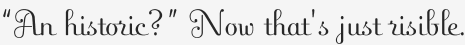

“An historic?” Now that's just risible.
The most depressing characteristic of the American conscience (if not the drive to over-consume) is its incurable inferiority complex in the face of imagined British sophistication. You’d think we would have outgrown this by now, but everything from that nasty snoot who came here to host an American version of Theweakestlink! to XXXX screams otherwise.
New York particularly, as the most intellectual, sophisticated, and arrogant city in the U.S. should be over this nonsense. But if anything, the cultural subjugation is even worse here. Remember last year, needing to be aware of the word “chav?” Pathetic. And as tarted-up varieties of the boots we grew up calling “galoshes” came into style last year, what were trendy New Yorkers calling them? Wellies. Short for wellington, named after the first Duke of Wellington. Golly, if only we could get one of those witty and sophisticated dukes to come rule us here, it would just be… brilliant!
So what’s with “an historic” coming out of the mouths of (American) television talking heads, and showing up in uninformed writings across the Internet? It is wrong. Because we pronounce the H in historic—oh yes, we do—it is entirely arbitrary and stupid to drop it before indefinite articles (a, an) only. If you don’t believe me, just look it up in what MrLittlePants refers to as simply “Chicago.” (That’s an American city. See, we are qualified to have our own version of the English language. Because we invented the atomic bomb, if nothing else.)
In other news, watch out for the word “risible.” It’s headed your way, if it hasn’t hit you already, in political editorial, movie reviews, and pompous conversation. From the Oxford American Dictionary:
adj, such as to provoke laughter : a risible scene of lovemaking in a tent.
Lovemaking. Risible in a tent, or with any Briton you’ve ever met.
Backtalk
Though I have used “risible” for years, I agree with you. And this entry from the the AP Stylebook explains the rule well:
a, an Use the article a before consonant sounds: a historic event, a one-year term (sounds as if it begins with a w), a united stand (sounds like you). Use the article an before vowel sounds: an energy crisis, an honorable man (the h is silent), an NBA record (sounds like it begins with the letter e), an 1890s celebration.
I’m sure you grew up using “ostensible,” too, while the rest of us made do with “he just be frontin’.”
Add a comment